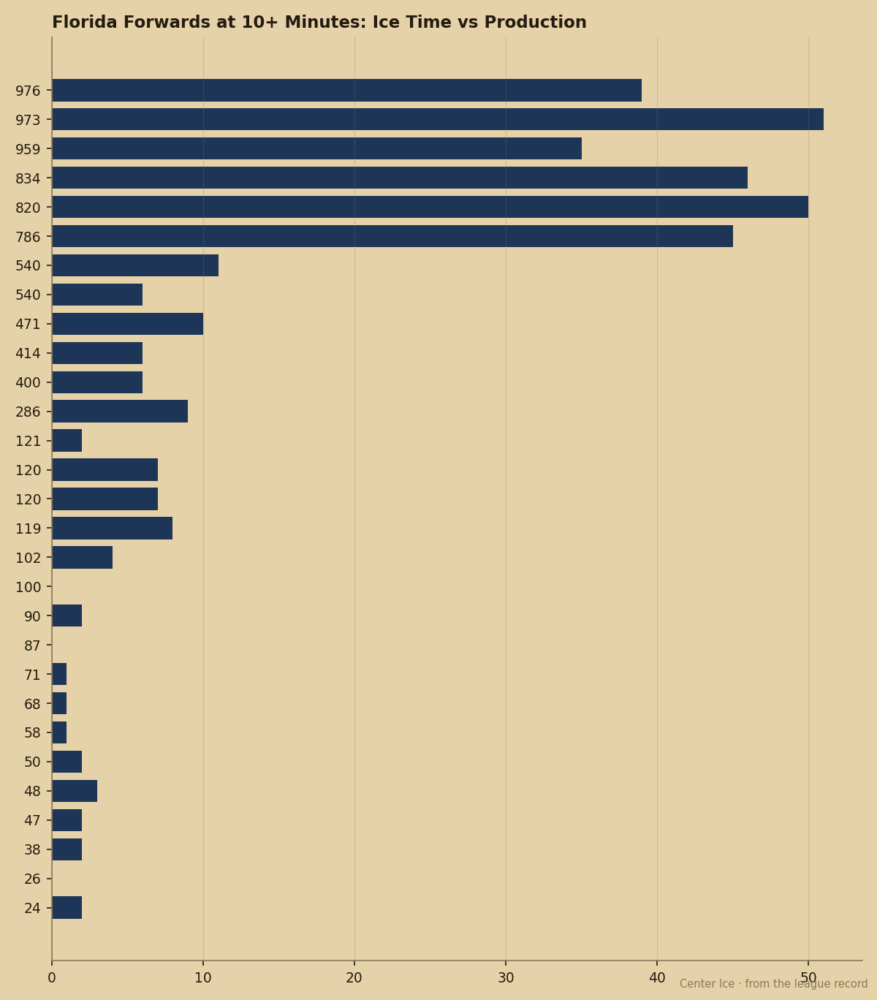

The 92 Speed Nobody Uses: Vaclav Nedorost Has Florida's Best Attributes and 12.3 Minutes
The 14th pick from 2000 is up 6 on the Index, carries a 94 potential, and plays the fewest minutes of any regular forward in Sunrise.
 Pete LarocqueScouting editor · The Prospect File
Pete LarocqueScouting editor · The Prospect File
The piece
 Vaclav Nedorost83 has the highest speed grade on the
Vaclav Nedorost83 has the highest speed grade on the  Florida Panthers roster. Speed 92 ties
Florida Panthers roster. Speed 92 ties  Olli Jokinen84's 93 from the Bureau's attribute list; the dossier gives him 92. Passing 90 trails only
Olli Jokinen84's 93 from the Bureau's attribute list; the dossier gives him 92. Passing 90 trails only  Viktor Kozlov80's 92. Puck-handling 89 tops both of them. Three first-line skill grades, one set of bottom-six minutes.
Viktor Kozlov80's 92. Puck-handling 89 tops both of them. Three first-line skill grades, one set of bottom-six minutes.
The Book gives Nedorost these per-attribute grades right now: speed 92, passing 90, puck-handling 89, agility 84, shot power 84. His overall reads 77 today. The base grade is 75. The +6 on the Development Index pushes the visible number to 77. His potential figure is 94, which puts 17 points of room on the Bureau's estimate.
The coach gives him 12.3 minutes a night.

The Index has him at the top of the risers list
The Bureau's Development Index puts Nedorost at +6. That number ties him with  Mike Cammalleri83, Mike Komisarek80, Pierre-Marc Bouchard79 and Jared Aulin73 at the top of the risers table. Five players carry +6 right now. Nedorost is the only one of the five whose coach gives him fewer minutes than any regular forward on his own team.
Mike Cammalleri83, Mike Komisarek80, Pierre-Marc Bouchard79 and Jared Aulin73 at the top of the risers table. Five players carry +6 right now. Nedorost is the only one of the five whose coach gives him fewer minutes than any regular forward on his own team.
The box score says something else
11 points in 44 games. 8 goals, 3 assists. 30 penalty minutes. At 12.3 minutes a night, he logged 540 total minutes this season. Jokinen logged 820. Kozlov logged 976.  Kristian Huselius86 logged 834. Nedorost plays for a coach who trusts his third and fourth centers, Matt Cullen and
Kristian Huselius86 logged 834. Nedorost plays for a coach who trusts his third and fourth centers, Matt Cullen and  Stephen Weiss75, ahead of a man whose speed grade is the best on the roster.
Stephen Weiss75, ahead of a man whose speed grade is the best on the roster.
Nedorost played 5 playoff games last spring and put up 3 points in 48 minutes. His 4 games and 1 point in 7 regular-season appearances last year carried 7.1 minutes a night, and Florida kept him at 12.3 this year.
$1.00M with one year left
His contract pays $1.00M and has 1 year remaining. He turns 23 in March. Florida Panthers sits 16-22-3 with 39 points, fourth in the Pacific.  Roberto Luongo97 is 93 in goal and the team has 144 goals for against 140 against.
Roberto Luongo97 is 93 in goal and the team has 144 goals for against 140 against.
Nedorost was the 14th pick of the 2000 draft, taken by  Colorado Avalanche. He played 25 games for Colorado in 2001-02, 42 in 2002-03, and 7 last season after the trade to Florida in July 2003 for Peter Worrell and a second-round pick. His NHL career total before this season was 74 games, 4 points.
Colorado Avalanche. He played 25 games for Colorado in 2001-02, 42 in 2002-03, and 7 last season after the trade to Florida in July 2003 for Peter Worrell and a second-round pick. His NHL career total before this season was 74 games, 4 points.
What the attributes say that the minutes don't
Speed 92, passing 90, puck-handling 89. Those are current grades from the Book, not projections. A player with those three marks sitting at 77 overall and 12.3 minutes a night is either being misused or is hiding something the attributes can't see.
His fight grade is 50, hero 59, off-the-ice discipline 61. Soft numbers that make a coach hesitate in a playoff series. Florida is 23 points behind  Dallas Stars.
Dallas Stars.
Nedorost told nobody anything this fortnight. His name did not appear in The Tunnel's logs. He played, he sat, he played again. The Index is up 6. The deal expires in 12 months. The coach keeps going to Cullen and Weiss down the middle and gives the kid short shifts and the corner.
I saw him when he was 14th overall and Colorado scouts thought they drafted a two-way center with the skating to carry a top-six role. He is 22 now, on a team that is not going anywhere, carrying attributes that say he belongs in the top six anywhere in this league. In 12 months, when the $1.00M expires and the 94 potential is still 17 points away from the 77, somebody else is going to hand him 18 minutes and see what happens.